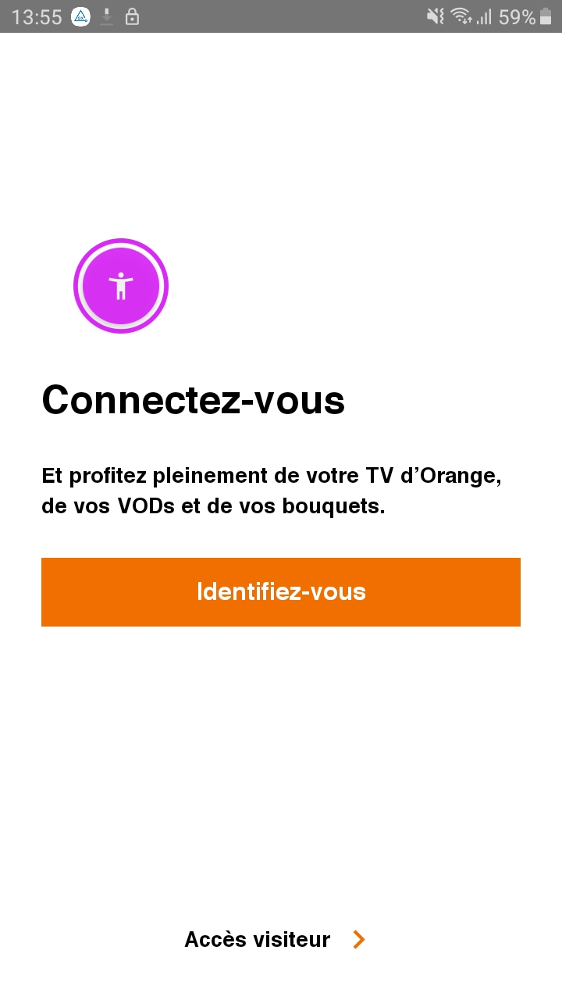

Application scan : analysis tools
Analysis tools complement the first approach, in order to detect other accessibility problems, such as those related to the size of the buttons, color contrasts etc ...
Accessibility Scanner #
The scanner can be downloaded from the playstore.
The scanner takes screenshots of the current activity and checks:
- that the screen contains "vocalizations or labels" for the screen reader
- that the clickable areas are large enough and that they have their own label
- color contrasts
Please note, this is only a verification aid, the tool sometimes reports false positives.
Some of these checks are duplicated with lint.
In case of doubt about contrasts, Colour contrast analysor makes a more precise diagnosis.
Procedure: #
- Activate the scanner in settings/accessibility/Accessibility Scanner (settings/accessibility/Installed services/Accessibility Scanner with One UI for Samsung devices). A floating action button appears on the screen.
- To test the display, press the button. A screenshot is taken and the list of suggested fixes is displayed.
Accessibility Scanner use exemple:
The floating button used to generate a report when Accessibility Scanner is active

The report thus generated by Accessibility Scanner once the button is clicked.

Google Play - Pre Launch Report #
Similar to the analysis performed by Accessibility Scanner, Google Play is able to generate accessibility reports after uploading its application to the developer console. Based on the same Framework as the Accessibility Scanner application, it verifies in particular 3 UI requirements within the application:
- The area used for interactive elements: a too small button would be indicated in the report for example
- Contrasts: checks that the contrast ratios are respected between the texts and their backgrounds
- Content descriptions: checks that all elements have a text to describe it to the user if necessary
Since this test is carried out from the Google Play console, this can be a final check made by the Product Owner himself, before pushing the application into production, and thus see that the accessibility criteria have been met.
Google Play report example :

aXe #
aXe is an application available on the Google Play Store and which makes it possible, as well as Accessibility Scanner or the Pre Launch Report from Google, to display accessibility problems. Although redundant with the two previous tools presented in some checks, it is recommended to use it as a complement, since it is able to display different accessibility errors, and will therefore perfectly complement the first exams.
To use aXe, you just need to download the application and then follow the instructions. Using a floating button , an analysis can be launched on the screen of your choice, and the errors report will be immediately produced at the bottom of the screen.
aXe use example :
aXe floating button displayed on the screen to trigger a report.
The report generated by aXe once the button is clicked.

UI Automator View #
UI Automator View is an Android SDK tool that scans and analyzes the UI components of an Android application. This makes it possible to see the hierarchy of views and the different properties for each one.
Although not a tool dedicated to accessibility, it can be used to analyze in more detail an accessibility issue, and better understand its origin.
To use this tool, you need to install the Android SDK. Once installed, you will find the tool at the following path: C:\users\username\AppData\Local\Android\sdk\tools\uiautomatorviewer.bat
To use it on an application, you need to have the developer mode activated on your phone, and to connect it via a USB cable to a computer, which has UI Automator View started. Once these conditions are met, just click on the Device Screenshot button in the tool to launch the UI components analysis of the screen displayed on the phone.
Layout bounds tool #
It is possible on Android to display the bounds of the different views of an application, which makes it possible to detect possible problems related to the size of the elements, to check margins are sufficient between various elements, and to verify that each sensitive area has a sufficient size.
To do this, navigate in "Settings/Developer options" and activate the option "Show layout bounds" in the category "Drawing"
Layout bounds use example:
The settings screen for layout bounds activation.

Screen example with layout bounds activate

Colour Contrast Analyser #
Color contrasts must be verified on the application mockups, or with Accessibility Scanner on an Android mobile. If any doubt remains, it is possible to take a screenshot of the application, then to check on a computer Measure the level of color contrast with the Color Contrast Analyzer tool.
For the values to respect see the section concerning colors.
These images are licensed under a Creative Commons Share Alike 2.0 license. Photo credit: openexhibits